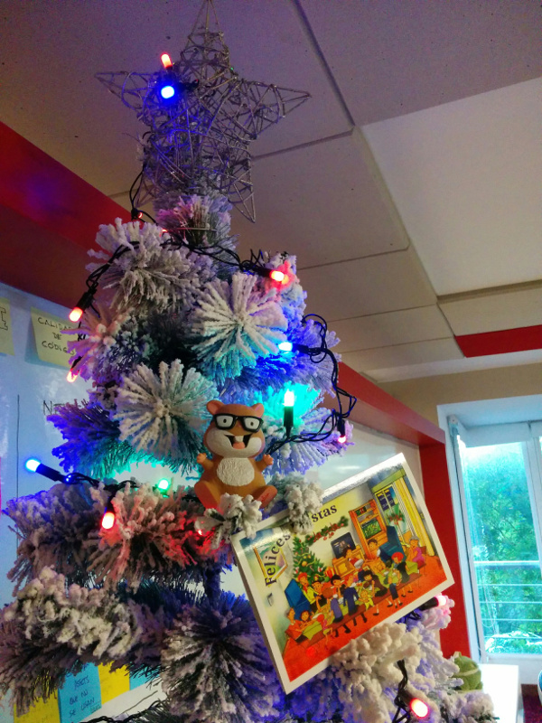

Diciembre de 2015
- Fecha: 19 de diciembre de 2015
- Hora: de 19:30 a 22:00
- Participantes: 10

Actividades
Testing y dudas
Nos juntamos para ver testing en Ember en general y resolver dudas que trajo la gente.
Ember desde casi cero
Hicimos un workshop utilizando la app de ejemplo music. Los requisitos son mínimos: algún conocimiento sobre desarrollo web y un nivel principiante de JavaScript.
Recursos
Participantes
- Adrián Mugnolo (@xymbol)
- Daniel Gomez (@eldano)
- Fabian Silva (@silvafab)
- Gustavo Sequeira (@tavofigse)
- Julio Barrios (@jubar)
- Luis Ferreira (@hidnasio)
- Marcos Bellucci (@delbetu)
- Pablo Suarez (@PabloSuarez)
- Pablo Flores
- Santiago Ferreira (@san650)
Agradecimiento
Agradecemos a WyeWorks por brindarnos el lugar e invitarnos las bebidas, los snacks y la cena.